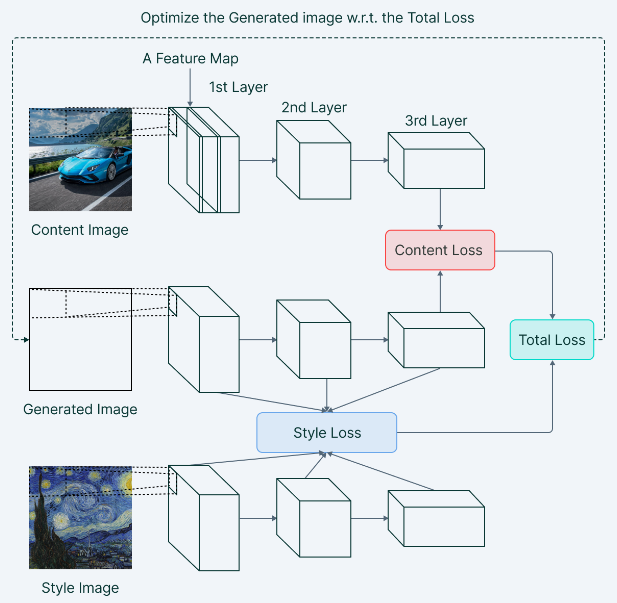

What is Neural Style Transfer?
Neural Style Transfer is an optimization technique used to take
two images—a content image and a style reference image (such as an
artwork by a famous painter)—and blend them together so the output
image looks like the content image, but “painted” in the style of
the style reference image. How do we make sure that generated
image has the content of the content image and the style of the
style image? To answer this, let's look at what Convolutional
Neural Networks(CNN) are actually learning.

Convolutional Neural Networks (CNN)
Convolutional Neural Networks are in charge of converting the
image into raw pixels so that the model can use them to create a
set of features. The first few layers are able to recognize very
simple things like edges and textures, and as we go deeper into
the network, the layers build up to recognize complex features and
objects.
The model functions as a sophisticated feature extractor halfway
between the layers that receive the image input and the layer that
produces the output. This capturing of different simple and
complex features is called feature representation. To obtain a
representation of the style of a reference image, we use the
correlation between different filter responses. The features that
we get from the higher levels of the model can be considered more
related to the content of the image.

Neural Style Transfer Basic Structure
Neural Style Transfer (NST) uses a previously trained
convolutional network, and builds on top of that, which in our
case, we uses the VGG-19 network as it is capable to detect
high-level features in an image. VGG-19 is a convolutional neural
network that is trained on more than a million images from the
ImageNet database. The idea of using a network trained on a
different task and applying it to a new task is called transfer
learning.
Firstly, we initialize a noisy image, which is the image that we
want to generate. We then feed this noisy image through the VGG-19
network and obtain the feature representations from the
intermediate layers. These intermediate layers are responsible for
the style and content representations of the image.
Since we want that our output image(G) should have the content of
the content image(C) and style of style image(S) we calculate the
loss of generated image(G) to the respective content(C) and
style(S) image.
Content Loss
Content Loss helps to establish similarities between the content
image and the generated image. Take note that the algorithm below are taken from the paper, A Neural Algorithm of Artistic Style by Leon A. Gatys, Alexander S. Ecker, Matthias Bethge, (2015).
It is calculated by Euclidean distance between the respective
intermediate higher-level feature representation of input image
(x) and content image (p) at layer l. This helps us to deduce that
images having the same content should also have similar
activations in the higher layers.
$$L_{content}(\vec{p}, \vec{x}, l) = \frac{1}{2} \sum_{\text{i,j}} (F^{l}_{ij} - P^{l}_{ij})^2 $$
Style Loss
Style loss is conceptually different from Content loss. We cannot
just compare the intermediate features of the two images and get
the style loss.
Here's where we introduce the concept of Gram Matrix. Gram matrix
is a way to interpret style information in an image as it shows
the overall distribution of features in a given layer. It is
measured as the amount of correlation present between features
maps in a given layer. The formula for Gram matrix can be defined as follows:
$$ G^{l}_{cd} = \frac{\sum_{\text{i,j}} F^{l}_{ijc}(x) F^{l}_{ijd}(x) }{IJ} $$
Style loss is calculated by the distance between the gram matrix of the generated image and the style reference image.
The contribution for each layer in the style information is calculated by the below formula:
$$ E_{l} = \frac{1}{4N^{2}_{l}M^{2}{l}} \sum_{i,j}(G^{l}_{ij} - A^{l}_{ij})^{2} $$
Thus, the total style loss across each layer is expressed as:
$$ L_{\text{style}}(a,x) = \sum_{l \in L} w_{l} E_{l} $$
Total Loss Function
The total loss function is the sum of the cost of the content and the style image. Mathematically, it can be expressed as : $$ L_{\text{total}}(\vec{p}, \vec{a}, \vec{x}) = \alpha L_{content}(\vec{p},\vec{x}) + \beta L_{style}({\vec{a}, \vec{x}}) $$ Alpha and beta are used for weighing Content and Style respectively. In general,they define the weightage of each cost in the Generated output image.
Summary
In general, NST employs a pre-trained Convolutional Neural Network for feature extraction and separation of content and style representations from an image. The architecture of the model performs the training using two loss terms: Content Loss and Style Loss Content loss is calculated by measuring the difference between the higher-level intermediate layer feature maps Style loss can be measured by the degree of correlation between the responses from different filters at a level. Below depicts the model architecture for Neural Style Transfer.
References
[1]
A Neural Algorithm of Artistic Style
, Leon A. Gatys, Alexander S. Ecker, Matthias Bethge, (2015).
[2]
Neural Style Transfer Tensorflow Core Tutorial.
[3]
Neural Style Transfer: Everything You Need to Know [Guide], Pragati Baheti